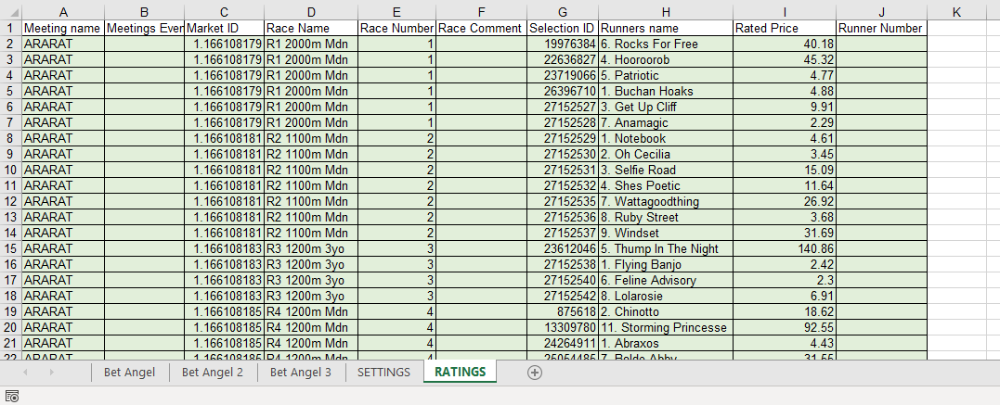

Bet Angel Pro: Ratings automation
Automating a thoroughbred ratings strategy across multiple markets using Bet Angel Pro
Using ratings from reputable sources can be a great way to increase your wagering IQ. In this tutorial, we'll be following a similar process to some of our other Betfair automation tutorials, but here we'll be using the ratings for thoroughbreds, created by the data science team at Betfair and incorporate them into our automation in Bet Angel. We've also added some functionality to the spreadsheet to allow you to automate three simultaneous markets in the event that a market is delayed and race times for multiple markets overlap.
Bet Angel Pro has a spreadsheet functionality that lets you place bets using your own variables and information from the live market, which is what we've used here to automate these ratings. There are so many different ways to use this part of Bet Angel and we're very open to any thoughts about more effective ways of implementing this sort of strategy. You're welcome to reach out to us on automation@betfair.com.au with your feedback and opinions.
- The plan
Bet Angel Pro's 'Guardian' feature has the capacity to let you create spreadsheets with pretty complicated rules that can be applied to multiple markets, which is what we've used for the automation here, incorporating the thoroughbred racing ratings into the automation.
We'll step through how we went about getting Bet Angel Pro to place bets using the Betfair's Data Scientists' thoroughbred ratings model. Once it's set up the goal is to be able to upload a new set of ratings, choose your races, set the program to run and be able to walk away. You'll also be able to use this approach to automate using your own ratings.

!!! info "Resources" - Ratings: Betfair's Data Scientists' thoroughbred ratings model - Rules: here's the spreadsheet We set up with our macros and rules included, but you'll obviously need to tweak it to suit your strategy and the format of your ratings - Tool: Bet Angel Pro - Assigning multiple markets to your Excel worksheets in Bet Angel so you don't miss a race: Betfair automating simultaneous markets tutorial
- Set up
Make sure you've downloaded and installed Bet Angel Pro, and signed in.
Once you open the program up click on the 'G' Guardian icon and open the Guardian functionality up.

- Downloading & formatting ratings
Here we're using the Betfair's Data Scientists' thoroughbred ratings model for horse racing but alternatively you can follow the same process using the Betfair's Data Scientists' Greyhound Ratings Model which is also available on the hub. When there are ratings made available, you will have the options to download them as a CSV or JSON file. For this tutorial, we'll go ahead and download the ratings as a CSV file.

Once we've downloaded the ratings, we'll go ahead and open up the files in Excel and copy the contents (Excluding the column headers) from cell A2, across all applicable columns which in this example is column N. Make sure to copy all rows that has data in them.

Copy the ratings data over to the customised Bet Angel template Excel sheet 'RATINGS' worksheet, being sure that cell A2 is selected when pasting the data. In the Excel template that we've provided, we've coloured the cells green where the data should be populated.

- Writing your rules
As with any automated strategy, one of the most important steps is deciding what logical approach you want to take and writing rules that suit.
We're using an customised Bet Angel template Excel sheet to implement our strategy, so it can make betting decisions based on our ratings and automate on multiple markets. Excel is an excellent tool, but it can take an investment of time to be able to use it effectively.
This is how we used Excel to implement our set of rules.
- Trigger to place bet
In short, we want to back or lay runners when:
- The available to back price is greater than the rating for that runner, then we will back the runner
- The available to back price is less than the rating for that runner, then we will lay the runner
- Back market percentage is less than a certain value that we choose
- The scheduled event start time is less than a certain number of seconds that we choose
- The event isn't in play
- Using cell references to simplify formulas
Throughout this tutorial, we'll be referencing certain cells with custom names that will make it easier to understand and follow the formulas as we progress. This is an especially effective method to keep on top of more complex strategies that require long formaulas to implement.
!!! info "Cell names used in this tutorial"
- **Ratings** refers to the entire Column I in the 'RATINGS' worksheet
- **SelectionID** refers to the entire column G in the 'RATINGS' worksheet
- **Overrounds1, Overrounds2 and Overrounds3** refers to cell AF8 in the 'BET ANGEL', 'BET ANGEL 2' and 'BET ANGEL 3' worksheets repectively, where the overrounds are calculated. Each worksheet needs to contain their own formula calculations as they will each be working off different markets.
- **UserOverround** refers to cell H4 in the 'SETTINGS' worksheet which allows you to change a single value that will automatically update the formulas for all runners
- **TimeTillJump1, TimeTillJump2 and TimeTillJump3** refers to cell E9, E13 and E17 in the 'SETTINGS' worksheet respectively. Just like the overrounds, each worksheet needs their own TimeTillJump calculation - one for each market.
- **UserTimeTillJump** refers to cell H3 in the 'SETTINGS' worksheet which allows you to change a single value that will automatically update the formulas for all runners
- **InPlay1, InPlay2, InPlay3** refers to cell G1 in the 'BET ANGEL', 'BET ANGEL 2' and 'BET ANGEL 3' worksheets respectively. Bet Angel will populate a status in these worksheet cells such as "In Play" or "Suspended" for each market
- **BACKLAY** refers to cell H5 in the 'SETTINGS' worksheet which allows you to easily switch between Back and Lay bet typers via a drop-down box and will automatically update the formulas for all runners
This is our trigger for the 'BET ANGEL' worksheet:
``` excel tab="Multi line" =IF( AND( OR( AND(BACKLAY = "BACK", (G9 > (INDEX(Ratings,MATCH(A9,SelectionID,0))))), AND(BACKLAY = "LAY", (G9 < (INDEX(Ratings,MATCH(A9,SelectionID,0)))))), Overrounds1<UserOverround, TimeTillJump1<UserTimeTillJump, ISBLANK(InPlay1)), BACKLAY, "" )
``` excel tab="Single line"
=IF(AND(OR(AND(BACKLAY = "BACK", (G9 > (INDEX(Ratings,MATCH(A9,SelectionID,0))))),AND(BACKLAY = "LAY", (G9 < (INDEX(Ratings,MATCH(A9,SelectionID,0)))))),Overrounds1<UserOverround,TimeTillJump1<UserTimeTillJump,ISBLANK(InPlay1)),BACKLAY,"")
Stepping through each step:
- Checking market odds based on back or lay bet type: Here we're checking which bet type we've chosen from the dropdown box in the 'SETTINGS' worksheet (cell I5). If a BACK bet has been selected, the best available back bet must greater than our ratings that have been defined for that particular runner in the 'RATINGS' worksheet. On the flip side, if a LAY bet has been selected, then the best available back bet must be less than our ratings. Instead of matching the runner name from the market to that which is defined in our ratings, we're using their selection ID instead. As the Selection ID is unique to each runner, it will help us eliminate any potential errors or issues. Because the ratings from the Betfair data scientists includes Selection ID, there's no additional work or mucking around to get this implemented.
=IF(
AND(
OR(
AND(BACKLAY = "BACK", (G9 > (INDEX(Ratings,MATCH(A9,SelectionID,0))))),
AND(BACKLAY = "LAY", (G9 < (INDEX(Ratings,MATCH(A9,SelectionID,0)))))),
Overrounds1<UserOverround,
TimeTillJump1<UserTimeTillJump,
ISBLANK(InPlay1)),
BACKLAY,
""
)
- Back market percentage (Overrounds1) is less than what we define (UserOverround): Here we're making a calculation for each runner (100 / best back price) and then calculating the sum of all of the runners together to give us the back market percentage. As the closer the BMP is to 100%, the fairer the market is, we use this to ensure that we only place bets when the market is less than what we define in the 'SETTINGS' worksheet. Additional information relating to over-rounds can be found on the Hub.
=IF(
AND(
OR(
AND(BACKLAY = "BACK", (G9 > (INDEX(Ratings,MATCH(A9,SelectionID,0))))),
AND(BACKLAY = "LAY", (G9 < (INDEX(Ratings,MATCH(A9,SelectionID,0)))))),
Overrounds1<UserOverround,
TimeTillJump1<UserTimeTillJump,
ISBLANK(InPlay1)),
BACKLAY,
""
)
- Time until the jump is less than what we define: Check whether the seconds left on the countdown timer are less than what we define in cell F3 in the 'SETTINGS' worksheet. This one's a bit complicated, as the time is actually returned as a percentage of a 24-hour day, which you need to convert into positive or negative seconds. You can read about the formula here or just keep it simple by referencing the value in cell E2 of the 'SETTINGS' worksheet (named 'TimeTillJump1'), where we've already done the calculations for you.
=IF(
AND(
OR(
AND(BACKLAY = "BACK", (G9 > (INDEX(Ratings,MATCH(A9,SelectionID,0))))),
AND(BACKLAY = "LAY", (G9 < (INDEX(Ratings,MATCH(A9,SelectionID,0)))))),
Overrounds1<UserOverround,
TimeTillJump1<UserTimeTillJump,
ISBLANK(InPlay1)),
BACKLAY,
""
)
!!! info "Calculating the time until the jump for multiple markets at the same time"
One thing to be aware of here is that because we're wanting to follow up to three markets in our excel workbook, we need to have three instances of the time conversion formula - One for each possible market that we may want to link into our Excel file. These formulas are located in the 'SETTINGS' worksheet on columns C, D and E.
In the 'BET ANGEL' worksheet, the formulas will be written ```TimeTillJump1<UserTimeTillJump,``` while in the 'BET ANGEL 2' and 'BET ANGEL 3' worksheets it will be written ```TimeTillJump2<UserTimeTillJump,``` and ```TimeTillJump3<UserTimeTillJump,``` respectively. This will mean that every 'BET ANGEL' worksheet will display and track the correct time till jump for their own applicable market.
- Not in play: checking whether the event has gone in play - as odds change so much in the run we only want to use this strategy pre-play. If this cell is blank it means it's not displaying the 'in-play' flag, so it's safe to place bets.
=IF(
AND(
OR(
AND(BACKLAY = "BACK", (G9 > (INDEX(Ratings,MATCH(A9,SelectionID,0))))),
AND(BACKLAY = "LAY", (G9 < (INDEX(Ratings,MATCH(A9,SelectionID,0)))))),
Overrounds1<UserOverround,
TimeTillJump1<UserTimeTillJump,
ISBLANK(InPlay1)),
BACKLAY,
""
)
- Result: if the statement above is true, the formula returns either a "BACK" or "LAY" depending on what has been selected from the 'SETTINGS' worksheet, at which point the bet will trigger, otherwise the cell will remain blank and no bet will be placed.
=IF(
AND(
OR(
AND(BACKLAY = "BACK", (G9 > (INDEX(Ratings,MATCH(A9,SelectionID,0))))),
AND(BACKLAY = "LAY", (G9 < (INDEX(Ratings,MATCH(A9,SelectionID,0)))))),
Overrounds1<UserOverround,
TimeTillJump1<UserTimeTillJump,
ISBLANK(InPlay1)),
BACKLAY,
""
)
!!! info "updating the trigger for 'BET ANGEL 2' and 'Bet ANGEL 3' worksheets"
You will need to ensure that the reference names for Overrounds, TimeTillJump and InPlay are changed so that they are referencing the cells that are applicable for those specific worksheets. Forgetting to do this can lead to the automation working off information from the wrong market.
- Trigger for 'BET ANGEL 2' worksheet: Note that Overrounds has been changed to Overrounds2, TimeTillJump1 to TimeTillJump2 and InPlay1 to InPlay2
=IF(
AND(
OR(
AND(BACKLAY = "BACK", (G9 > (INDEX(Ratings,MATCH(A9,SelectionID,0))))),
AND(BACKLAY = "LAY", (G9 < (INDEX(Ratings,MATCH(A9,SelectionID,0)))))),
Overrounds1<UserOverround,
TimeTillJump1<UserTimeTillJump,
ISBLANK(InPlay1)),
BACKLAY,
""
)
- Trigger for 'BET ANGEL 3' worksheet: Note that Overrounds has been changed to Overrounds3, TimeTillJump1 to TimeTillJump3 and InPlay1 to InPlay3
=IF(
AND(
OR(
AND(BACKLAY = "BACK", (G9 > (INDEX(Ratings,MATCH(A9,SelectionID,0))))),
AND(BACKLAY = "LAY", (G9 < (INDEX(Ratings,MATCH(A9,SelectionID,0)))))),
Overrounds1<UserOverround,
TimeTillJump1<UserTimeTillJump,
ISBLANK(InPlay1)),
BACKLAY,
""
)
!!! info "Excel functions"
- [IF function:](https://support.office.com/en-us/article/if-function-69aed7c9-4e8a-4755-a9bc-aa8bbff73be2) IF(if this is true, do this, else do this)
- [AND function:](https://support.office.com/en-us/article/and-function-5f19b2e8-e1df-4408-897a-ce285a19e9d9) AND(this is true, and so is this, and so is this) - returns true or false
- [And Or function:](https://support.office.com/en-us/article/use-and-and-or-to-test-a-combination-of-conditions-e1ed88d7-1de3-4422-ae41-45291a69f9e1) checks that the statement meets more than one condition. If this OR that, then do the following.
- [Absolute references:](https://support.office.com/en-us/article/switch-between-relative-absolute-and-mixed-references-dfec08cd-ae65-4f56-839e-5f0d8d0baca9) if you're copy/pasting formulas it's important that you make links absolute when you don't want the cell being referenced to change relative to the new cell the formula is being pasted into. You do this by putting a $ in front of the parts of the reference you don't want to 'move'.
- Preparing the spreadsheet
You need to copy/paste this formula into the relevant cell on each green row - we copied ours into all of the coloured cells in the sheet, just in case the fields are bigger in future events such as the Melbourne Cup. Excel is clever enough to automatically update the relative links in the formulas, so you should be able to copy/paste the same formula into each cell as long as you've got your relative and absolute references straight.
- Trigger bet rule: this is the bet trigger Excel formula we created earlier, and it needs to go in column L (L9 for the first runner).
``` excel tab="Multi line" =IF( AND( OR( AND(BACKLAY = "BACK", (G9 > (INDEX(Ratings,MATCH(A9,SelectionID,0))))), AND(BACKLAY = "LAY", (G9 < (INDEX(Ratings,MATCH(A9,SelectionID,0)))))), Overrounds1<UserOverround, TimeTillJump1<UserTimeTillJump, ISBLANK(InPlay1)), BACKLAY, "" )
``` excel tab="Single line"
=IF(AND(OR(AND(BACKLAY = "BACK", (G9 > (INDEX(Ratings,MATCH(A9,SelectionID,0))))),AND(BACKLAY = "LAY", (G9 < (INDEX(Ratings,MATCH(A9,SelectionID,0)))))),Overrounds1<UserOverround,TimeTillJump1<UserTimeTillJump,ISBLANK(InPlay1)),BACKLAY,"")

- Odds: initially we were using the runner's rating as the price, but we got a bet placement error for some of the selections - eventually we realised that the odds the bet's being placed at need to be valid Betfair 'ticks'. For simplicity's sake we're now just using the currently available back odds (cell G9 for the first runner). This goes in column M (M9 for the first runner). Another option would be to create a look up table that rounded your rating to the nearest 'tick' price - if you do this, please do send us through your formula and we'll add it to this tutorial.
!!! info "Note:" The IF statement in both the odds and stake cells is purely to keep our document clean of clutter when there are no runners in column B. A similar effect to IFERROR, if Bet Angel hasn't populated cell B9 with a runner name, then dont populate this cell at all.
=IF(B9="","",G9)

- Stake: It's completely up to you what staking approach you want to take. We've kept it simple and are just using a 'to win / to lose' strategy. Each bet aims to win whatever value has been entered in the 'SETTINGS' worksheet on that runner at the current odds if the bet type has been set to BACK. If the bet type has been changed to LAY, then the stake becomes the liability - again, easily changed in the 'SETTINGS' worksheet. We've got some good resources on the Hub that look at different staking approaches - these might be useful in helping you decide which strategy you want to use.
=IF(B9="","",IF(BACKLAY="BACK", stake/(G9-1),stake*(H9/(H9-1))-stake))

- Connecting to Bet Angel
Video walk through
We've put together a litte video walk through to help make this process easier.
- Selecting markets
We used the markets menu in the 'Guardian' tool to navigate to Australian tracks that we have ratings for, then multi-selected all the win markets by holding down the control key and clicking on the different markets.
Once you've chosen the races you're interested in, click the 'add' button and you'll see them appear in the main body of the screen.
Make sure you sort the races by start time, so Bet Angel will automatically move through them in the right order and allocate the next race to the spreadsheet once the previous one ends.
You do this by clicking on the 'start time' column heading until the races are in time order (when the arrow is pointing up). Below is an example of doing this on Australian markets.

The Excel spreadsheet used in this tutorial is created in a way that allows it to link multiple markets at the same time. Take a look at the Betfair automating simultaneous markets tutorial on the hub which will step you through the process so you can take advantage of this feature.
- Linking the spreadsheet
Open the 'Excel' tab in 'Guardian', then use the browse functionality to choose the spreadsheet you've been working on. From there, click on 'open workbook', then make sure you have 'connect', 'auto-bind Bet Angel sheets and 'auto-clear Bet Angel bindings' all selected. You also need to make sure that the first race has the 'Bet Angel' tab selected in the 'Excel sheet' column - from there it will then automatically update this for each race as one finishes and the next one begins.

And you're set!
Once you've set your spreadsheet set up and you're comfortable using Bet Angel Pro it should only take a number of seconds to load your markets and ratings up and set your strategy running for the day. Just make sure you have all of the app settings correctly selected before you leave the bot to run, as some of them reset by default when you turn the program off.
!!! info "Note:" You will need to leave your computer up and running for the duration of the chosen markets, as the program needs the computer to be 'awake' to be able to run.
Bet Angel features
Here are some Bet Angel features that you'll need to consider.
- Multiple bets/clearing status cells
The Bet Angel spreadsheet won't let a bet go on if there is a value in column 0 for the runner, the 'status' column, to avoid accidentally placing multiple bets unintentionally. As soon as a bet triggers, Bet Angel automatically changes this cell to 'PLACING', then to 'PLACED' when the bet is confirmed as having been received by Betfair. In this strategy we only want to place one bet per runner, but if you wanted to place multiple bets on a runner you'd need to have a play with the macros to clear the 'status' cells more regularly, and instead reference the number of bets placed/matched in columns T:AE. Careful here though, as the values in these columns sometimes take a little time to update, and we've had more bets go on than we intended when using these cells as our check, as bet trigger re-evaluated before columns T:AE had updated.
As we want to use each worksheet over and over again for multiple races, and the 'status' cells don't clear automatically, we've created a macro in the Excel sheet that auto-clears the status cells whenever a new race loads. It also clears the cells if they say 'FAILED', as we found that if there were internet network issues or similar it would fail once then not try to place the bet again. This was based on some logic we found in a forum discussion on Bet Angel. If you're feeling adventurous you can have a play with the macros and edit them to suit your specific needs.
- Turning off bet confirmation
Unless you want to manually confirm each individual bet you're placing (which you definitely might want to do until you feel comfortable that the program and strategy are behaving as you expect) you'll need to go into the 'Settings' tab on the main Bet Angel Pro program, click 'Edit settings', go to the 'Behaviour' tab, and remove the tick at the top next to 'Confirm Bets?' - you can then save these settings. Bet Angel allows you to save different settings configurations as profiles. Depending what you are wanting to use Bet Angel for each time you open it up, you can select the appropriate setting profile to suit your needs without having to go through and change them every time.

- Editing the spreadsheet
The spreadsheet really doesn't like it when you try and edit it 'live', so make sure you untick 'connect' on the Excel tab in Guardian before you make any changes, save the sheet, then tick 'connect' again once you've finished your edits.
Areas for improvement
There are parts of this approach that we're still trying to get to work to our liking, and we'll update this article as we find better solutions. If you have any suggestions for improvements please reach out to automation@betfair.com.au - we'd love to hear your thoughts.
What next?
We're working through some of the popular automation tools and creating articles like this one to help you learn how to use them to implement different styles of strategies. If you have any thoughts or feedback on this article or other programs you'd like to see us explore please reach out to automation@betfair.com.au - this article has already been updated with extra learnings including variable percentages and new macros.
Disclaimer
Note that whilst automated strategies are fun and rewarding to create, we can't promise that your betting strategy will be profitable, and we make no representations in relation to the information on this page. If you're implementing your own strategies, you do so entirely at your own risk and you are responsible for any winnings/losses incurred. Under no circumstances will Betfair be liable for any loss or damage you suffer.